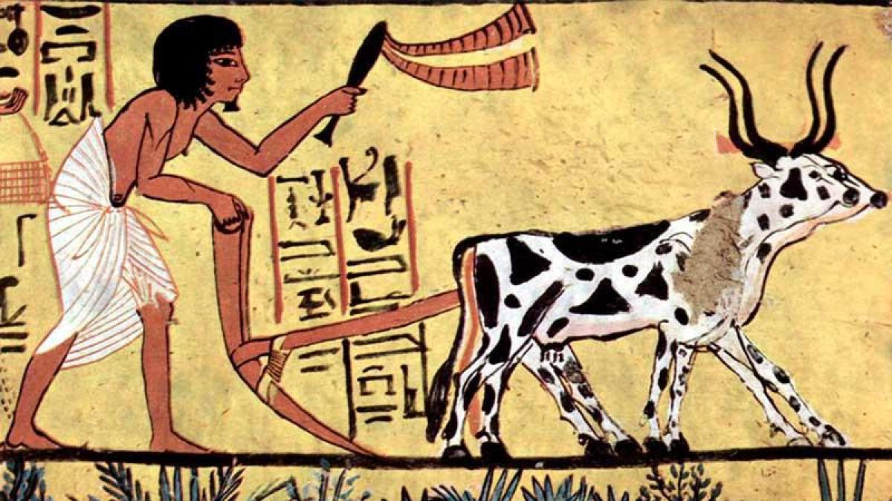
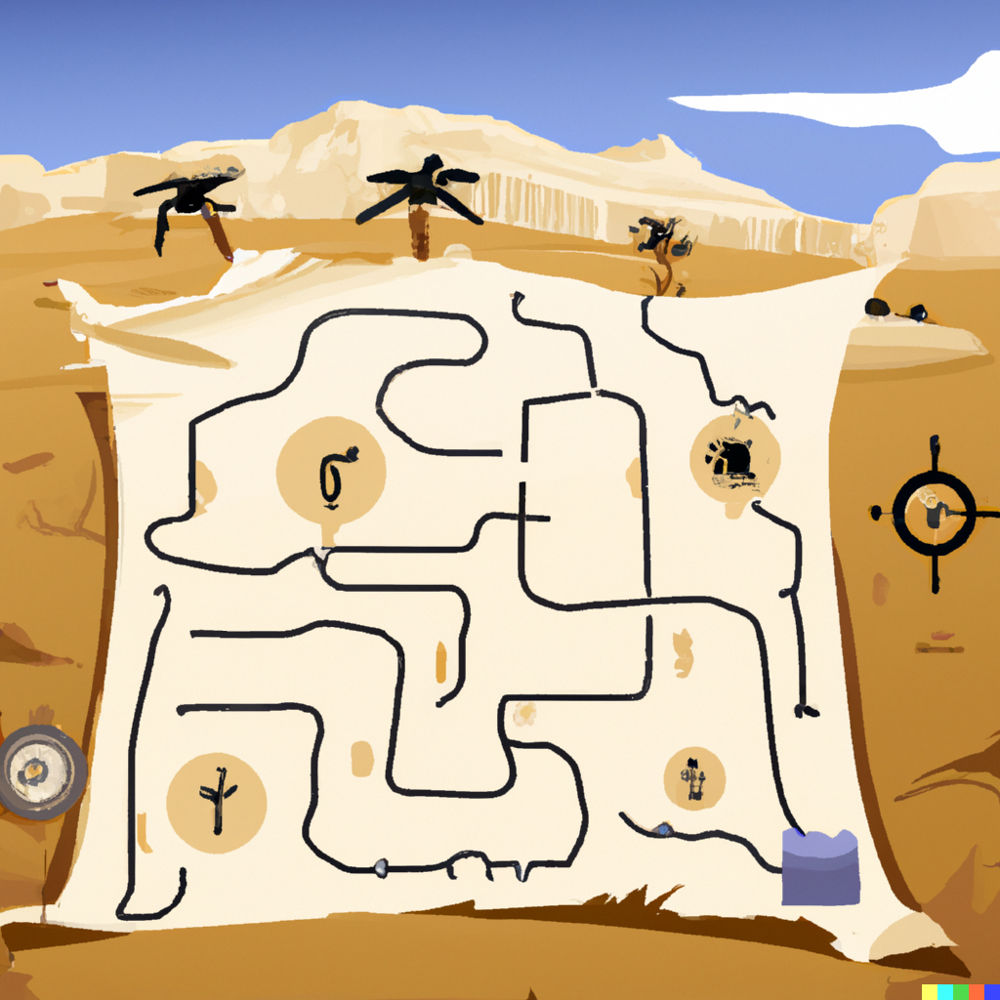

En busca del oraculo de Amon
Advertencia: Mejor experiencia con pantalla maximizada
¡Bienvenid@, joven aventurer@!
Eres un campesino egipcio que vive una vida humilde y miserable por culpa de las sequias y los tributos, pero eso podria cambiar. Segun lo que has oido de unos mercaderes que pasaban por tus campos, hay un templo perdido en lo mas profundo del desierto que pertenece al mismisimo Dios Amon-Ra. Dentro de este templo se encuentra el oraculo de Amon, que es capaz de ver el futuro mas prospero de una persona y hacerlo realidad. Sin embargo tambien has oido que todo aquel que ha intentado llegar hasta el oraculo ha muerto en su intento. Pero no tienes nada que perder, y te lanzas a la aventura.
Tras comprar un camello, abastecimiento y un viejo mapa con todos tus ahorros, te diriges al desierto. El camino es duro, pero al cabo de unos dias, ves una puerta incrustada en unas dunas. ¡Has conseguido llegar al templo! Pero ahora, ¿seras capaz de llegar hasta el oraculo, o acabaras como el resto de aventureros que han intentado llegar hasta el?
Puedes configurar tu navegador antes de empezar
Letra: 18 px
Sonido:
Texto a voz: